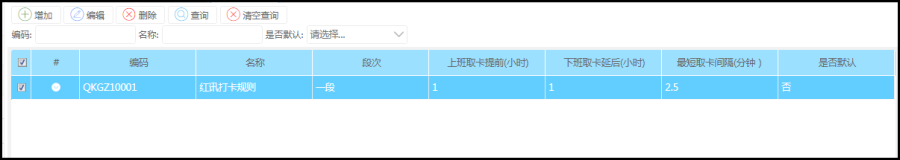
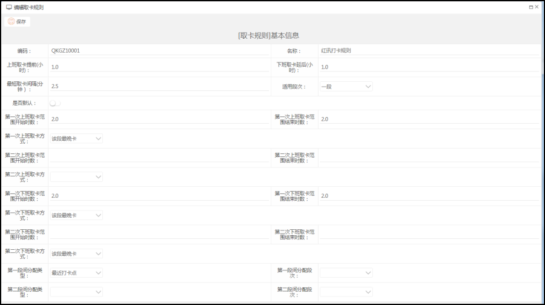

功能描述
设置打卡时间范围，打卡段数，打卡规则
1>打卡时间范围：设置一个打卡时间范围，例如上班时间是9点，那我们打卡范围在9点之前，下班时间是18点，那么下班打卡时间范围在18点之后
2>打卡段数：系统默认有第一段和第二段，也就是说一天要打两次卡
操作步骤
菜单路径：考勤管理--->考勤业务设置--->取卡规则

具体信息

字段属性：
1>"上班取卡提前"和“下班取卡提前”是指例如上班时间9:00——18:00，那么上班打卡的有效时间是9:00之前，下班打卡有效时间是18:00之后
2>“最短取卡间隔”就是取卡是取完一次后，下一个取卡间隔的有效时间，例如上一个取卡时间是8:00，那么下次的有效时间是8:02，8：10，如果设置的是10分钟，那么下次的取卡时间是8:20
3>"适用段数"是指适用几段班，不同的段数，取卡规则不一样
4>上下班取卡支持两次取卡，设置两次取卡范围，每次取卡都可以设置一次取卡方式
"上班取卡范围开始时数"代表上班时间前几个小时开始取卡，设置的数值不能大于‘上班取卡提前’的数值
“上班取卡范围结束时数”代表下班时间前几个小时开始取卡，设置的数值不能超过上班对应该段次的总数值
“下班取卡范围开始时数”代表下班时间后几个小时取卡，设置的数值不能超过下班对应该段次的总数值
“下班取卡范围结束时数”代表下班时间后几个小时取卡，设置的数值不能大于‘下班取卡延后’的数值
5>“段间分配类型”：‘就近打卡’是指这个段内只有一笔打卡记录，根据打卡记录离那个时间点近就分配给哪个取卡点。‘手工分配’是指是指这个段内只有一笔打卡记录，根据手工分配的原则分为上班卡和下班卡